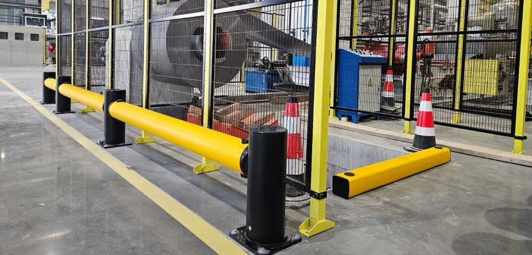
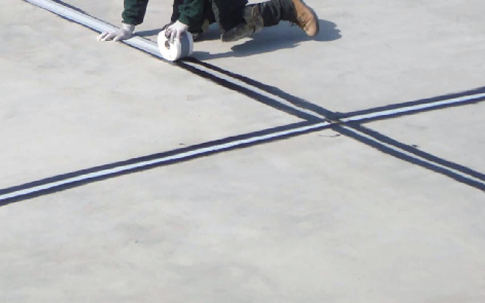
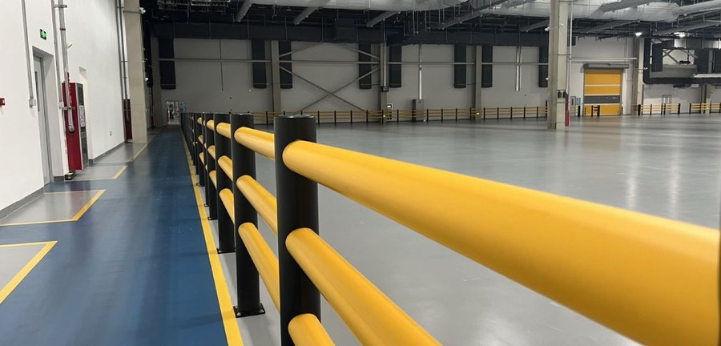
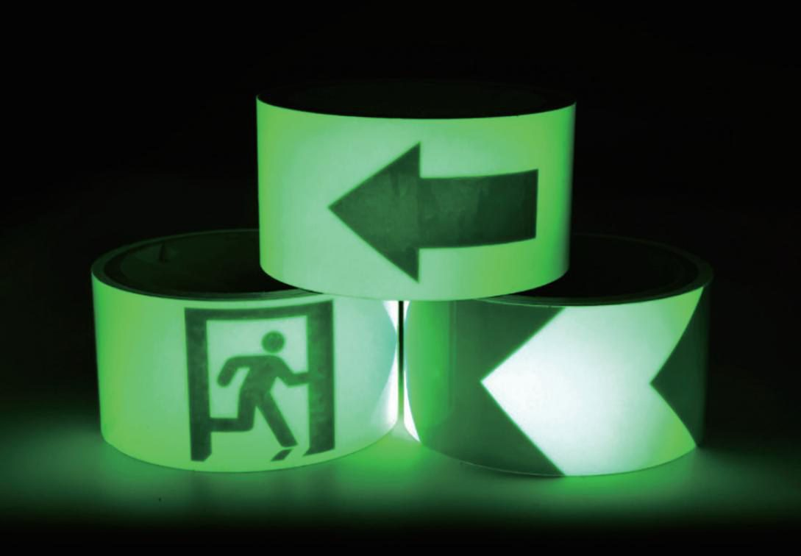

Bài ngắn, nói rõ quan điểm. Mỗi bài một việc làm ngay.
Ba bài mỗi tuần về xe nâng, rào chắn, băng dán sàn và tự kiểm kho trong ca.

Ảnh: nhà sản xuấtRào chắn xe nâng: thép hay polymer
Đừng thay hết. Cũng đừng giữ thép ở chỗ ngày nào cũng bị va. Quy tắc chọn theo từng đoạn trong kho.

Ảnh: nhà sản xuấtKẻ vạch sàn nhà xưởng: sơn hay băng dán
Giới hạn của sơn và băng dán, kèm cách chọn theo từng khu: lối đi chính, khúc cua, khu kệ, dock.

Ảnh: nhà sản xuấtTách lối đi bộ và đường xe nâng trong kho: bố trí ra sao
Điểm giao cắt, góc kệ, cửa ra vào, dock, lối đi tắt: bố trí vạch, rào, cổng ở từng chỗ trong kho.
 Ảnh: nhà sản xuất
Ảnh: nhà sản xuấtBảng màu vạch sàn nhà xưởng theo thông lệ 5S
Tám màu vạch sàn hay dùng theo thông lệ 5S, cách chốt bảng màu riêng cho nhà máy và bản in để dán ở cửa xưởng.
Anh thấy xe. Xe không thấy anh.
Ba lý do tài xế không thấy người đi bộ.
 Ảnh: nhà sản xuất
Ảnh: nhà sản xuấtTách người khỏi xe nâng: 3 mức
Vạch mới chỉ là mức thấp nhất.
Ảnh: nhà sản xuất15 phút, 5 chỗ phải kiểm
Đi một vòng kho đúng lúc xe đang chạy.

Ảnh: nhà sản xuấtMất điện. Băng vẫn sáng.
Dán băng dạ quang trước ở ba chỗ.
Vạch sơn hay băng dán sàn
Chỗ nào sơn vẫn hợp, chỗ nào đổi sang băng.
Bản mẫu: chỉ bài đầu có trang đọc. Các bài khác viết lại từ 6 bài LinkedIn của anh Vương khi web mở; tạm dẫn về trang liên quan.
Đọc bài nào trước: tuỳ chuyện kho đang gặp
Mỗi bài trên trang này trả lời một câu hỏi cụ thể trong kho và kết thúc bằng một việc làm ngay trong ca. Phần dưới giúp anh chị chọn bài đọc trước và dùng bài với đội kho.
Bốn nhóm chủ đề
Bài được chia theo bốn nhóm, giống bộ lọc ở đầu trang. Mỗi nhóm gắn với một loại chuyện hay gặp trong kho.
- Xe nâng và người đi bộ: điểm giao cắt, lối đi tắt, vì sao tài xế không thấy người
- Rào chắn: khi nào giữ rào thép, khi nào đổi polymer, rào đoạn nào trước
- Băng dán sàn: kẻ vạch, chống trơn, phản quang, dạ quang, bảng màu
- Tự kiểm trong ca: đi một vòng kho đúng lúc xe đang chạy, nhìn gì, chụp gì
Đọc trước bài nào, theo chuyện đang gặp
Không cần đọc theo thứ tự. Bắt đầu từ chuyện kho đang gặp trong tuần này.
- Rào thép đầu dãy kệ móp đi móp lại: đọc rào chắn xe nâng thép hay polymer
- Người đi bộ hay cắt ngang đường xe: đọc tách lối đi bộ và xe nâng
- Vạch sơn mờ sau vài tháng, kho sắp đổi bố trí: đọc vạch sơn hay băng dán
- Mỗi tổ hiểu màu vạch một kiểu: đọc bảng màu vạch sàn
- Chưa biết kho mình có chuyện gì: đi một vòng theo checklist 10 điểm
Dùng bài với đội kho
Bài viết ngắn để đọc được trong buổi họp đầu ca. Người phụ trách đọc to phần đầu bài, rồi giao việc làm ngay ở cuối bài cho đích danh một người.
Ví dụ, sau bài thép hay polymer, tổ trưởng xe nâng đi dọc các đầu dãy kệ và đếm đoạn rào đã móp. Sau bài tách lối đi, một người đứng năm phút ở điểm giao cắt đông nhất, đếm số người đi qua mà không dừng lại nhìn. Kết quả ghi lên bảng của kho, chụp ảnh lại.
Bản in để dán ở cửa xưởng hoặc phát cho tổ trưởng có ở trang tài liệu.
Bài nói được gì, không nói được gì
Bài nói cách nghĩ và cách chọn theo từng đoạn trong kho. Bài không thay được việc đo tại chỗ: độ dày sàn, khoảng trống thật giữa kệ và đường xe, loại xe nặng nhất chạy qua. Con số kỹ thuật chỉ có trong bài khi có nguồn, và nguồn ghi ở cuối bài. Doanh nghiệp nên đối chiếu quy định hiện hành về an toàn lao động cho từng hạng mục.
Đọc xong, làm gì tiếp
Ảnh chụp khi làm việc ở cuối bài là ảnh gửi đi được ngay. Gửi qua trang đặt khảo sát kèm chiều dài ước lượng và loại xe, Thiên Khôi xem ảnh rồi gọi lại. Muốn xem sản phẩm trước, vào trang sản phẩm.
Ai viết các bài, và bài có quảng cáo sản phẩm không?
Bài do Thiên Khôi viết, anh Lê Huy Vương duyệt phần kỹ thuật trước khi đăng. Bài nói cả chỗ không cần mua gì: lối phụ chỉ cần kẻ vạch, đoạn rào thép ít bị va thì giữ lại. Khi bài nhắc tới sản phẩm, liên kết dẫn về trang sản phẩm để anh chị tự xem giới hạn của từng dòng.
Số liệu trong bài lấy từ đâu?
Số liệu kỹ thuật chỉ đưa vào bài khi có nguồn, và nguồn ghi ở cuối bài kèm ngày truy cập. Chỗ chưa có nguồn thì bài viết định tính, không kèm con số. Ví dụ: rào polymer cong rồi trở lại dáng cũ trong mức cỡ rào đó chịu được. Muốn biết cỡ rào hợp với xe của kho mình thì cần khảo sát tại chỗ.
Có được in bài ra để dùng trong buổi họp an toàn không?
Được. Bài viết để đọc trong vài phút ở buổi họp đầu ca. Khi dùng nội bộ, nên giữ phần nguồn ở cuối bài để người đọc biết con số lấy từ đâu. Tài liệu dạng bản in như checklist và bảng màu vạch sàn thì đăng ký ở trang tài liệu để nhận bản phù hợp.
Kho tôi có chuyện không thấy trong bài nào thì sao?
Gửi ảnh chỗ đó qua trang đặt khảo sát hoặc nhắn Zalo, kèm mô tả ngắn: chuyện gì xảy ra, ở khu nào, loại xe nào chạy qua. Chuyện nhiều kho cùng gặp sẽ được viết thành bài mới, không ghi tên công ty hay vị trí kho. Trong lúc đó, 7 khu trong kho có thể đã có phần anh chị cần.
Nên đọc bài trước hay dùng công cụ chọn nhanh trước?
Nếu đã biết chỗ cần xử lý, dùng công cụ chọn nhanh để có gợi ý ban đầu, rồi đọc bài cùng chủ đề để hiểu vì sao. Nếu chưa biết bắt đầu từ đâu, đọc một bài về xe nâng và người đi bộ trước, vì đó là chỗ người và xe nâng đi chung một khoảng sàn.